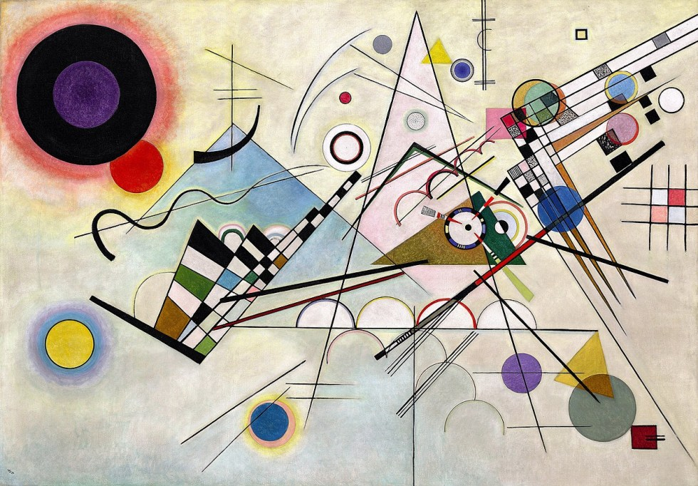
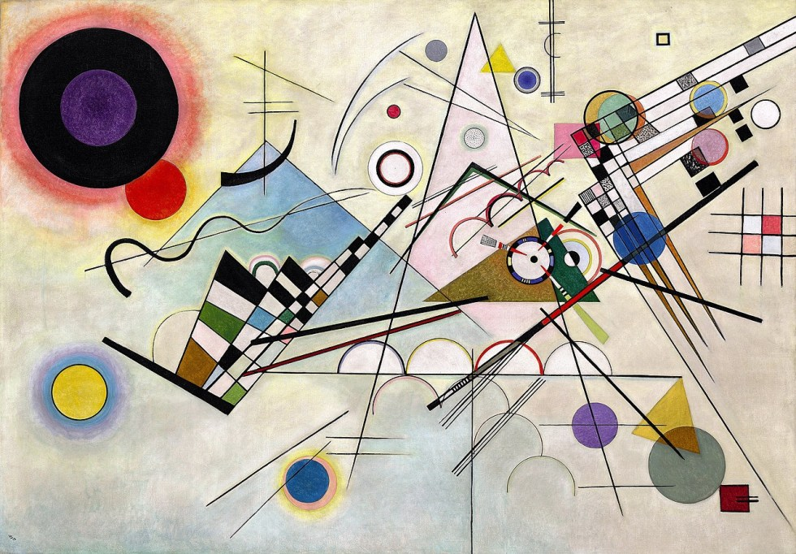

American Gothic — Grant Wood (1930)

The Great Wave off Kanagawa — Katsushika Hokusai (1831)
Why Art?
Art has always been a mirror of culture, ideas, and human creativity. By exploring different movements and styles, you get to see how the world has changed — and how artists have shaped it.

A Journey Through Time
Follow our mini-timeline to discover:
- The Renaissance: A rebirth of knowledge, perspective, and beauty.
- Impressionism: Capturing light, color, and fleeting moments.
- Modern Art: Bold experimentation, breaking rules, and new voices.
Piece of the Day
Today’s highlight: Starry Night by Vincent van Gogh (1889). Did you know Van Gogh painted this while in a mental asylum, looking out his window at night?
Browse by Collection

 
